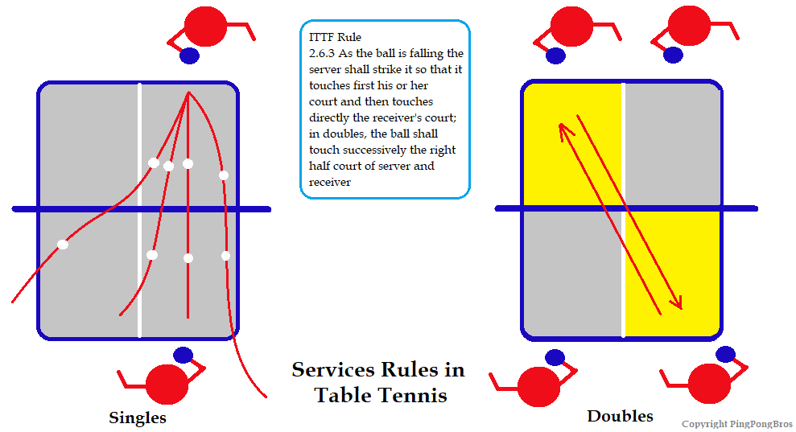

HomePage
HomePage
Table tennis can be played with either one player on each side - Singles Match or two players on each side - Doubles Match. While the singles matches are more popular, the real fun is in doubles. Broadly the rules for singles and doubles are the same.
In the next section, we'll be discussing the rules for each of them.
The game starts with first deciding who serves first and from which end.
As per the official ITTF rule (2.13.1), the game starts with the toss of the coin with two distinct sides.
Players play a rally, and whoever wins gets to decide who starts. Another common way is hiding the ball in one of the hands, keeping both hands under the table, and asking the opponent to guess.
The winner can either choose to serve first or choose the side.
A valid serve should be such that it bounces once on the server's court and at least once on the receiver's court without touching the net. There is no restriction on where the ball may bounce on either side.
The serve should be done diagonally from the right half court of the server to the right half court of the receiver such that the ball bounces successfully on each court without touching the net.
If the ball hits the net while serving, there are two possible outcomes:
For a serve to be considered legal, the server must follow these rules:
The receiver must hit the ball with their paddle (whether during a serve or rally) after the ball has bounced once on their side, such that:
When a serve or return results in no point, it is called a Let.
A point is won or lost under the following conditions:
A table tennis match is played in a "best of 3, 5 or 7" format. Most international tournaments use the best of 7 games system. The player who wins the majority of games (e.g., 4-3, 4-0) wins the match.
Each game is played up to 11 points, with each player getting two consecutive serves before switching.
Let's say Player A wins the toss and decides to serve. He wins one point and then loses the next — scores are now 1-1. Now, Player B will serve two times in a row. The match continues in this alternating manner.
The winner of the game is the first to reach 11 points, with at least a 2-point lead.
A deuce occurs when the score is 10-10. At this point:
Player A is at 9 points, and Player B is at 10. Player A serves and wins the point — now the score is 10-10 (Deuce).
Now:
After the match is complete, the players switch sides.
The primary rules of the game remain the same as in singles, but there are a few key differences in the flow of the match.